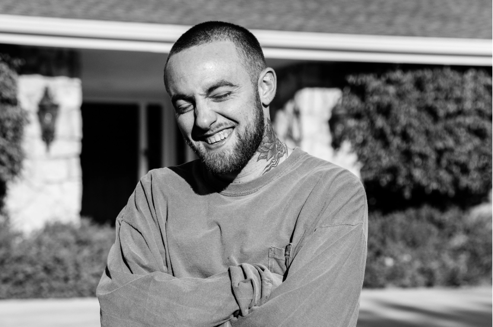

Mac Miller
rapper, zpěvák, autor písní a hudební producent

Fotka Mac Millera
Časová osa jeho života:
- 1992 - 19.ledna se narodil
- 2010 - Uzavřel smlouvu s vydavatelstvím Rostrum Records.
- 2011 - Dokončil své debutové studiové album Blue Slide Park, které vyšlo 8. listopadu.
- 2013 - Založil Mac svůj vlastní label, REMember, který je pojmenovaný po jeho zesnulém kamarádovi, Reubenovi Elimu Mitranovi.
- 2014 - Se definitivně rozloučil s Rostrum Records a v říjnu uzavřel pro sebe i jeho label smlouvu s Warner Bros Records.
- 2014-2018 - Vydavá další alba jako GO:OD AM (2015), The Divine Feminine (2016), Swimming (2018)
- 2018 - Zemřel 7. září na nechtěné předávkování kokainem, fentanylem a alkoholem.
- 2020 - I po jeho smrti bylo vydáno album Circles (2020)
Pokud by Vás zajímalo více, můžete se podívat na článek o Mac Millerovi naWikipedii